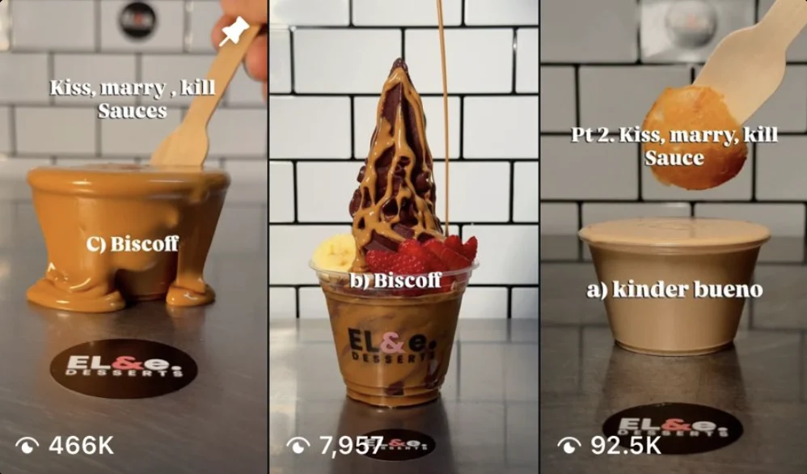

A brand-new açaí and dessert shop in West Richmond with zero followers on opening day. I've run all of its marketing since then: strategy, filming, editing, posting, the website and the brand graphics.
My role
Freelance marketing & content lead
Period
Sep 2026 – now, since opening day
Channels
Instagram, TikTok, website
Tools
CapCut, Canva, Instagram, TikTok

The Kiss, Marry, Kill series, screenshotted in October 2026. The lead Reel has since passed 547K views.
547Kviews on the lead Reel
0 → 1,900+Instagram followers in two months
830+TikTok followers
8,600+TikTok likes
From the public @elande.desserts Instagram and @elande.dessertss TikTok profiles, 5 November 2026.
The TikTok grid: owner-led videos and launch content.
The owner on camera, me behind it
A new shop has no audience and no budget for ads, so everything rides on short-form video. The owner is the face of the brand; I plan, film, edit and post every piece.
Content pillars
Food that stops the scrollClose-up sauce pours, waffles and açaí bowls shot in the shop.
Owner-led storytellingThe owner on camera trying, reacting and introducing the menu.
LaunchesNew items like “Adelaide's First Crunch Waffle” (37K TikTok views).
Late-night positioningOpen until 12am every night, pushed as the go-to dessert run.
My workflow
PlanConcepts, hooks and a posting schedule across Instagram and TikTok.
Shoot and editFilmed in store and edited in CapCut with on-screen text and pacing for retention.
Publish and manageCaptions, posting, story highlights and replying to the community.
One Reel series, about 280× the follower base
The “Kiss, Marry, Kill” sauce series became the account's breakout content and put a two-month-old shop in front of hundreds of thousands of people.
Objective
Build awareness for a new shop with no existing audience.
Action
A familiar game format applied to the menu: three sauces poured on camera, inviting viewers to pick theirs in the comments, then a Part 2 to keep it going.
Result
The lead Reel reached 547K views and Part 2 added 92.8K, with the account still under 2,000 followers.
Learning
A simple interactive hook plus satisfying food visuals travels much further than a standard product post.
The Reels tab on 5 November 2026, with the Menu and Timings highlights I designed.
The profile does the selling
The Menu, Timings and Açaí highlights I designed in Canva let someone who arrives from a Reel check the menu and opening hours without leaving Instagram. Part 2 of the series added 92.8K views on its own.
Somewhere to send the attention
Views only matter if people can find the menu and order. I designed and built elande.com.au: the full menu, the brand story and Uber Eats and DoorDash ordering in one place, plus the menu, opening hours and product graphics in Canva.